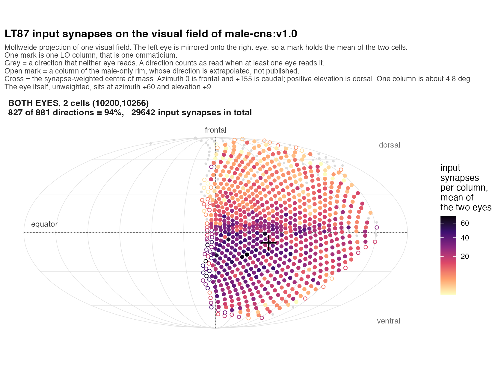

Clio-NG scenes for the male CNS (male-cns:v1.0). Each neuron is red; input synapses are point annotations, one layer per presynaptic type. Extra layers start hidden; toggle them in the layer bar.
Overview: all 2 neurons with their strongest inputsType level, summed over all 2 bodies. Share is of LT87’s
total input. Neurotransmitter is the partner’s own consensus_nt.
Click a column header to sort.
| Partner type | NT | Synapses | Share | Bodies | Example |
|---|---|---|---|---|---|
| Tm24 | acetylcholine | 17210 | 57.5% | 245 | scene |
| Tm5a | acetylcholine | 2274 | 7.6% | 310 | scene |
| Tm30 | gaba | 1233 | 4.1% | 123 | scene |
| Tm5Y | acetylcholine | 933 | 3.1% | 389 | scene |
| LT58 | glutamate | 613 | 2.0% | 2 | scene |
| LT11 | gaba | 564 | 1.9% | 2 | scene |
| T2a | acetylcholine | 554 | 1.9% | 268 | scene |
| MeLo12 | glutamate | 430 | 1.4% | 47 | scene |
| Li34b | gaba | 302 | 1.0% | 55 | scene |
| TmY19a | gaba | 298 | 1.0% | 61 | scene |
| Li16 | glutamate | 283 | 0.9% | 4 | scene |
| Tm6 | acetylcholine | 240 | 0.8% | 181 | scene |
| AVLP080 | gaba | 216 | 0.7% | 2 | scene |
| LC15 | acetylcholine | 209 | 0.7% | 88 | scene |
| Li39 | gaba | 186 | 0.6% | 2 | scene |
Same, for LT87’s outputs. The transmitter shown is still the partner’s, so it describes what that partner releases, not the sign of this connection.
| Partner type | NT | Synapses | Share | Bodies | Example |
|---|---|---|---|---|---|
| AVLP316 | acetylcholine | 1041 | 5.3% | 6 | scene |
| CB1852 | acetylcholine | 912 | 4.6% | 9 | scene |
| LHAD1g1 | gaba | 859 | 4.4% | 2 | scene |
| AVLP597 | gaba | 715 | 3.6% | 2 | scene |
| CB1185 | acetylcholine | 402 | 2.0% | 4 | scene |
| VES022 | gaba | 393 | 2.0% | 10 | scene |
| AVLP080 | gaba | 384 | 1.9% | 2 | scene |
| (untyped) | acetylcholine | 365 | 1.9% | 17 | - |
| AVLP017 | glutamate | 346 | 1.8% | 2 | scene |
| AVLP577 | acetylcholine | 279 | 1.4% | 4 | scene |
| AVLP340 | acetylcholine | 266 | 1.3% | 2 | scene |
| pC1_1a | acetylcholine | 263 | 1.3% | 7 | scene |
| DNp55 | acetylcholine | 259 | 1.3% | 2 | scene |
| CL311 | acetylcholine | 236 | 1.2% | 2 | scene |
| AVLP299_c | acetylcholine | 226 | 1.1% | 3 | scene |
| Neuron | Side | Input syn | Of the 4 types |
|---|---|---|---|
| LT87 10200 | L | 14595 | 10166 |
| LT87 10266 | R | 16256 | 11484 |
Tm24 Tm5a Tm30 Tm5Y
Mollweide projection of the visual field, in the style of Berg et al. 2025. The two eyes are one map: the left eye is mirrored onto the right eye, and a mark holds the mean of the two cells. One mark is one lobula column, that is one ommatidium. A grey mark is a direction that neither eye reads. The cross is the synapse-weighted centre, at azimuth 50 and elevation -8, while the eye itself sits at azimuth 60 and elevation +9. LT87 reads 827 of the 881 directions, so it sees almost the whole eye, and it gives more weight to the frontal field and to the field below the equator. The map agrees with the published Cell Type Explorer page for LT87: 15754 against 15784 input synapses for the right cell, 719 against 719 columns, and a columnar completeness of 0.846 against 0.84. Built by R/19_lt87_eye_map.R; run it with SIDES=1 for one panel per eye.
